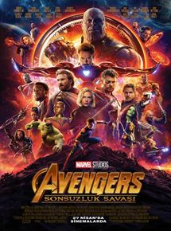
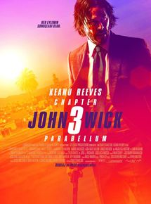
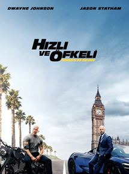

Vizyon tarihi: 26 Nisan 2019 (3s 1dk)
Yönetmen: Joe Russo, Anthony Russo
Oyuncular: Robert Downey Jr., Chris Evans, Mark Ruffalo
Tür: Aksiyon, Fantastik, Macera
Ülke: ABD
Özet ve Detaylar
"Avengers Infinity War"un ardından pek çok süper kahraman küle dönüşmüştür. Doktor Strange, Gamora, Drax,
Mantis, genç Örümcek Adam, Black Panther, Bucky Barnes, Groot, Scarlet Witch, Vision, Star Lord, Maria Hill,
The Wasp ve Nick Fury gibi pek çok kahraman, Thanos'un Sonsuzluk Eldiveni'ni ele geçirmesi ve kendi dengesini
kurması yüzünden yok olmuştur ve dünya umutsuz haldedir. Dünya üzerinde kalan Black Widow, Kaptan Amerika,
Thor ve Hulk kendi yaslarını tutmaktayken, Iron ve Nebula ise kontrol edemedikleri bir uzay gemisinin içinde,
uzay boşluğunda sürüklenmektedirler. Süper kahramanlar takımı için işler pek de iyi görünmemektedir. Ancak
Kuantum Bölgesi'nden çıkmanın bir yolunu bularak Avengers ekibinin kalan üyelerine giden Ant-Man, yeni bir
umut ışığı olacaktır. Daha önce var olduğunu bilmedikleri bölgeler, kahramanlar ve evrenlerin varlığını
öğrenen ekip, Thanos'un kurduğu bu çarpık dengeyi değiştirmek ve kendilerinden alınanı geri getirmek için
hayatlarının en büyük mücadelesine girişeceklerdir. Hepsi kişisel olarak önem verdikleri şeyleri kaybetmiş
olan kahramanlarımız için intikam vakti gelmiştir.
Avengers: Sonsuzluk Savaşı

Vizyon tarihi: 27 Nisan 2018 (2s 36dk)
Yönetmen: Joe Russo, Anthony Russo
Oyuncular: Robert Downey Jr., Chris Hemsworth, Mark Ruffalo
Tür: Macera, Aksiyon
Ülke: ABD
Özet ve Detaylar
Avengers: Sonsuzluk Savaşı, dünyanın gördüğü en büyük tehdite karşı güçlerini birleştirmek zorunda olan
kahramanların verdikleri mücadeleyi konu ediyor. Kaptan Amerika ve Iron Man'in arasında yaşanan olayların
ardından bölünen kahramanlarımız, birbirlerinden uzaklara savrulurlar. Hepsi kendi yandaşlarıyla dünyayı
korumaya çalışmaktadır. Ancak dünyanın kaderi bir kez daha tehlikeye girer. Sınırsız bir güç kaynağı olan
sonsuzluk taşlarının peşine düşen Thanos, dünyanın gördüğü en büyük tehdittir. İnsanlığın kaderi bir kez daha,
insanlık için savaşmaya ant içmiş kahramanlarımız elindedir. Hiçbir süper kahramanın tek başına yenemeyeceği
büyüklükteki bu tehdit için ekipler birleşmeli ve tehdide tüm güçleriyle karşı koymalıdır...
John Wick: Chapter 3 - Parabellum

Vizyon tarihi: 16 Mayıs 2019 (2s 11dk)
Yönetmen: Chad Stahelski
Oyuncular: Keanu Reeves, Halle Berry, Anjelica Huston
Tür: Aksiyon
Ülke: ABD
Özet ve Detaylar
John Wick iki nedenden ötürü firaridir. Kellesi üzerine 14 milyon dolarlık açık sözleşme konulmuştur ve temel
bir kuralı ihlal etmiştir; Continental Hotel'de birini öldürmüştür. Kurbanı ise açık kontratı sunan Yüksek
Masa üyesidir. İşi bitmiş olması gereken John'a otelin yöneticisi Winston tarafından bir saatlik bir kaçış
süresi verilir. Ardından üyeliği iptal edilecek, tüm hizmetlerden men edilecek ve diğer üyelerle iletişimi
kesilecektir. John'un New York City'den kaçma mücadelesinde güvenebileceği tek şey servis endüstrisidir...
Hızlı ve Öfkeli: Hobbs ve Shaw

Vizyon tarihi: 2 Ağustos 2019
Yönetmen: David Leitch
Oyuncular: Dwayne Johnson, Jason Statham, Idris Elba
Tür: Aksiyon
Ülke: ABD
Özet ve Detaylar
Hızlı ve Öfkeli serisinin spin-off filmi olan Hobbs & Shaw, seriden tanıdığımız Luke Hobbs ve Deckard Shaw
karakterlerine odaklanıyor. Başrollerini Dwayne Johnson ve Jason Statham’ın üstlendiği filmde “The Crown”
dizisinin Prenses Margaret’ı Vanessa Kirby Deckard Shaw’un kız kardeşi olan bir MI-5 ajanına hayat verirken,
Altın Küre ödüllü Idris Elba ise kötü adam olarak karşımızı çıkıyor. Yönetmen koltuğuna ise “John Wick”,
“Sarışın Bomba” ve “Deadpool 2” filmlerinden tanıdığımız David Leitch'in oturduğu filmin senaryosunu Chris
Morgan kaleme alıyor.